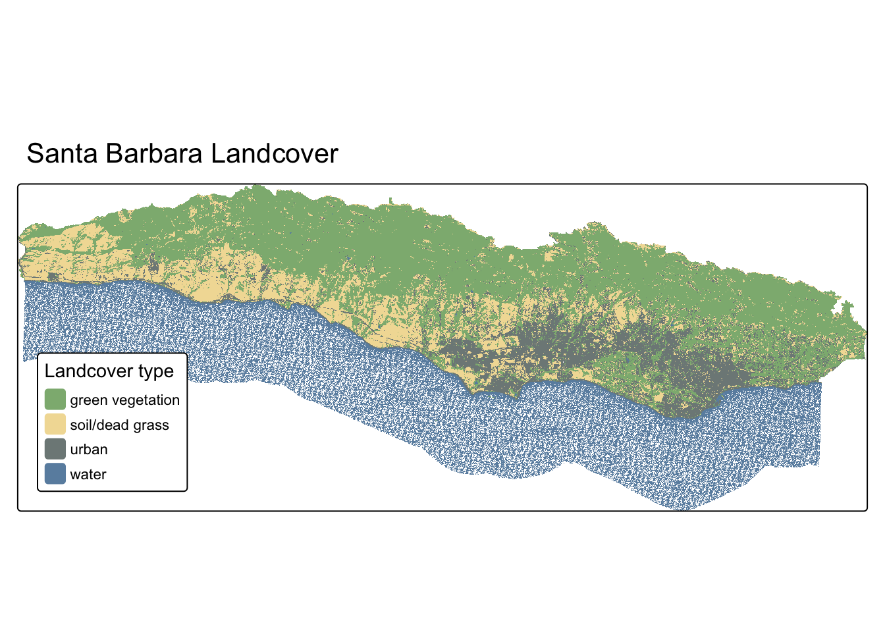

Background
The Eaton Fire ignited on January 7, 2025, in the foothills above Altadena, California, quickly becoming one of the most destructive wildfires in Los Angeles County history. Fueled by extreme Santa Ana winds and drought-stressed vegetation, the fire rapidly descended into residential neighborhoods, destroying thousands of structures and fundamentally altering the landscape.
Task
To assess fire damage from LiDAR data, we will calculate elevation changes by comparing pre- and post-fire Digital Surface Models (DSM) and Digital Terrain Models (DTM). We will then extract elevation change statistics for individual buildings within a damaged neighborhood and analyze the relationship between building age and elevation loss.
NoteGetting started
To get started, download the data from this folder to access all necessary data.
Data
LiDAR data
- digital surface models (DSM) represent the elevation of the top of all objects
- digital terrain model (DTM) represent the elevation of the ground (or terrain)
- Pre-fire: Collected in 2016
- Post-fire: Collected in January 2025
Data files:
dtm_eaton_epsg32611_geoid12b_1m_POSTFIRE.tifdtm_eaton_alignedNK_1m_PREFIRE.tifdsm_eaton_epsg32611_geoid12b_1m_POSTFIRE.tifdsm_eaton_alignedNK_1m_PREFIRE.tif
Building Damage Assessments data
- Vector polygons representing building footprints
- Attributes include roof construction type, assessed damage level, address
Data file: 06061784-f911-4d0e-aca5-0768ac66aac5.gdb
Eaton Fire Perimeter
- shapefile of the Eaton fire perimeter
Data file: Eaton_Perimter_20250121.shp
Workflow
1. Set up
Let’s load all necessary packages:
library(terra)
library(sf)
library(tidyverse)
library(tmap)
library(here)
library(rayshader)2. Load data
dtm_pre <- rast(here::here( "week9", "Eaton", "dtm_eaton_alignedNK_1m_PREFIRE.tif"))
dsm_pre <- rast(here::here("week9", "Eaton", "dsm_eaton_alignedNK_1m_PREFIRE.tif"))
dtm_post <- rast(here::here( "week9", "Eaton", "dtm_eaton_epsg32611_geoid12b_1m_POSTFIRE.tif"))
dsm_post <- rast(here::here( "week9", "Eaton", "dsm_eaton_epsg32611_geoid12b_1m_POSTFIRE.tif"))damage <- st_read(here::here("week9","Eaton","06061784-f911-4d0e-aca5-0768ac66aac5.gdb")) %>% st_transform(crs = crs(dsm_post))eaton_perimeter <- st_read(here::here( "week9", "Eaton","Eaton_Perimeter_20250121", "Eaton_Perimeter_20250121.shp"))%>% st_transform(crs = crs(dsm_post))# Check if all four rasters have matching coordinate reference systems
if (crs(dtm_pre) == crs(dsm_pre) &
crs(dsm_pre) == crs(dtm_post) &
crs(dtm_post) == crs(dsm_post)&
crs(dtm_post) == crs(damage)&
crs(dtm_post) == crs(eaton_perimeter)) {
print("All coordinate reference systems match!")
} else {
warning("Coordinate reference systems do not match!")
}[1] "All coordinate reference systems match!"3. Calculate Elevation Change
Now we’ll calculate the difference between pre- and post-fire elevations. A negative change indicates elevation loss (destroyed buildings/vegetation), while positive change indicates elevation gain.
# Ground surface change (bare earth)
diff_dtm <- dtm_post - dtm_pre
# Surface change (buildings + vegetation)
diff_dsm <- dsm_post - dsm_pre
names(diff_dtm) <- "DTM_change"
names(diff_dsm) <- "DSM_change"4. Visualizing Elevation Change
Create a map showing where elevation changed most dramatically. Red colors will indicate elevation loss, while blue indicates elevation gain.
# Crop surfance change to extent of Eaton perimter
diff_dsm_crop <- crop(diff_dsm, eaton_perimeter)
# Calculate quantiles for determining breaks
quantiles <- global(diff_dsm_crop, fun = quantile,
probs = c(0.005, 0.995), na.rm = TRUE)
# Remove values outside of upper and lower quantile
diff_dsm_scaled <- clamp(diff_dsm_crop,
lower = quantiles[1,1],
upper =quantiles[1,2] )Code
# Create fire damage color palette
fire_palette <- c("#8B0000", "#FF4500", "#FF6347", "#FFFFFF",
"#87CEEB", "#4169E1", "#00008B")
# DSM difference map
tm_dsm <- tm_shape(diff_dsm_scaled) +
tm_raster(
col.scale = tm_scale_intervals(
values = fire_palette,
breaks = c(-14, -10, -5, -2, 0, 2, 5, 10, 16),
midpoint = 0
),
col.legend = tm_legend(
title = "Elevation\nChange (m)",
position = tm_pos_out("right", "center")
)
) +
tm_shape(eaton_perimeter) +
tm_borders(col = "red", lwd = 2.5) +
tm_title("Eaton Fire: DSM Elevation Change (2025 - 2016)") +
tm_credits("Data: OpenTopography",
position = c("left", "bottom"))
tm_dsmSpatRaster object downsampled to 2479 by 4036 cells.
We will zoom in to a particular block of Altadena Homes to assess their damage and run some analyses with our elevation data. The bounding box below uses coordinates from this Altadena neighborhood:

Let’s start with creating our bounding box and cropping our rasters to the extent of our box.
# Select single block of homes in Altadena
neighborhood <- ext(394486.57, 395167.24, 3784596.32, 3784987.29)
# Crop
diff_crop <- crop(diff_dsm, neighborhood)
dtm_crop <- crop(dtm_post, neighborhood)Now that we have zoomed into a specific neighborhood, lets create a plot using the rayshader package to visualize elevation differences.
# Convert to matrices
elev_mat <- raster_to_matrix(dtm_crop)
diff_mat <- raster_to_matrix(diff_crop)
# Color overlay
overlay <- height_shade(
diff_mat,
texture = colorRampPalette(c("#8B0000", "#FF6347", "#FFFFFF",
"#87CEEB", "#00008B"))(256),
range = c(-20, 20)
)
# Create map with strong hillshade
elev_mat %>%
sphere_shade(texture = "bw", sunangle = 315) %>%
add_overlay(overlay, alphalayer = 0.7) %>%
add_shadow(ray_shade(elev_mat, zscale = 1), 0.5) %>%
plot_map()
5. Damage assesment in a specific Altadena Neighborhood
Now let’s quantify the relationship between building characteristics and fire damage severity.
# Create 6 meter buffer around building points
damage_buffers <- st_buffer(damage, dist = 6)
# Extract minimum and mean elevation loss for each building buffer
lidar_min <- terra::extract(diff_dsm, damage_buffers, fun = min, na.rm = TRUE)# Create dataframe of largest and average elevation change for each building buffer
damage_analysis <- damage_buffers %>%
mutate(
lidar_min_change = lidar_min[[2]],
elevation_loss = abs(lidar_min_change)
)Code
# Create plot of elevation loss based on year built
damage_plot <- damage_analysis %>%
st_drop_geometry() %>%
filter(!is.na(YEARBUILT)) %>%
mutate(
age_category = factor(case_when(
YEARBUILT >= 2000 ~ "2000 +",
YEARBUILT >= 1980 ~ "1980-1999",
YEARBUILT >= 1960 ~ "1960-1979",
YEARBUILT >= 1940 ~ "1940-1959",
TRUE ~ "<1940"
)))
ggplot(damage_plot,
aes(x = age_category, y = elevation_loss, fill = age_category)) +
geom_boxplot(alpha = 0.7) +
scale_fill_brewer(palette = "YlOrRd") +
coord_flip() +
labs(
title = 'Building Time Period vs Elevation Loss',
x = 'Building Time Period',
y = 'Elevation Loss (m)'
) +
theme_minimal() +
theme(legend.position = "none")
References
Brigham, C., Scott, C., & Crosby, C. (2025). Using Lidar to understand the impacts of the 2025 Palisades and Eaton Fires, Los Angeles, CA. OpenTopography Blog. https://opentopography.org/blog/using-lidar-understand-impacts-2025-palisades-and-eaton-fires-los-angeles-ca
OpenTopography. (2025). Topographic differencing spanning the 2025 Palisades and Eaton Fires, LA [Dataset]. OpenTopography. https://doi.org/10.5069/G95B00PW